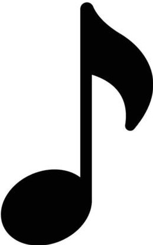

Rock Internacional
- Wape me up when september ends - Greenday

- Start Me Up - The Rolling Stones
- Californication - Red Hot Chilli Peppers
- Knocking on heaven door - Gun's and Roses
- Don't Cry - Gun's and Roses
Rock Nacional
- 5 Minutos Más - Andrés Calamaro
- Tu Carcel - Enanitos Verdes
- Que Ves - Divididos
- A Rodar Mi Vida - Fito Paez
- Un Pacto Para Vivir - Bersuit Vergarabat
Pop Latino
- Bendita tu Luz - MANA
- Señora de las 4 Décadas - Ricardo Arjona
- Sueños - Diego Torres
- Alejate de Mi - Camila
- Dejame Llorar - Ricardo Montaner
Folklore
- A Don Amancio - Chequeño Palavecino
- Jazminero Azul - Horacio Guarany
- Paisajes de Catarca - Jorge Cafrune
- La Oma - Los Nocheros
- Desde que tu te has ido - Luciano Pereyra